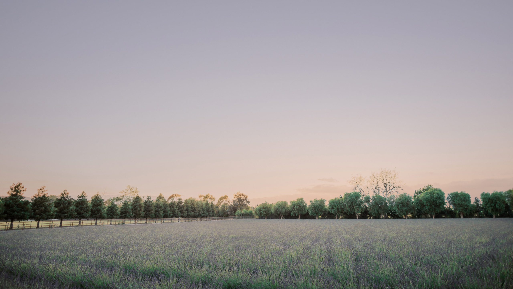
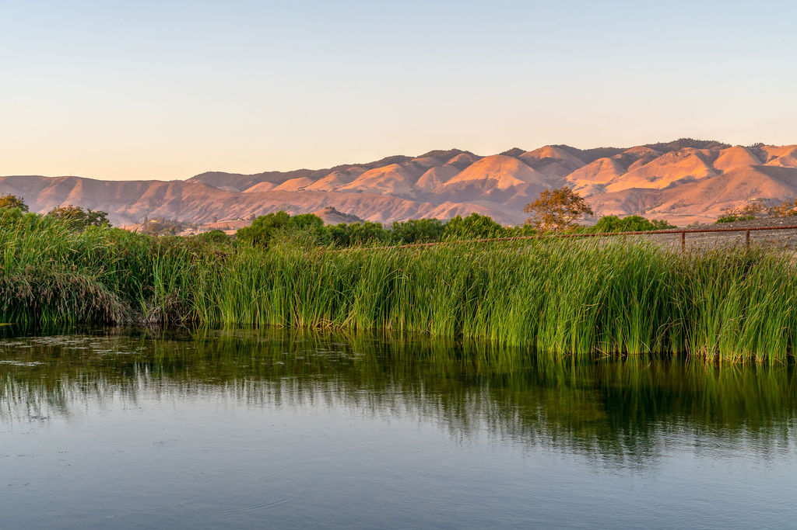

Things to Do
A full valley to explore

01
Wine Tasting
Cool-climate Chardonnay and Pinot Noir across a valley of celebrated tasting rooms, many just minutes away.
Discover
02
Downtown San Luis Obispo
A walkable, historic downtown of restaurants, cafés, shops, and easy Central Coast charm.
Discover
03
Beaches — Pismo & Avila
Wide sands, tide pools, and seaside strolls at Pismo and Avila, a short drive toward the coast.
Discover
04
Hiking & Trails
Rolling hills and open country invite scenic walks and rides, with wildflowers in season.
Discover
05
Farmers' Markets & Dining
Farm stands, lively markets, and Central Coast tables that celebrate the region's bounty.
Discover
06
The Estate Itself
Lavender fields, an animal sanctuary, ponds, and celebrated celebrations — all within the gates.
Discover